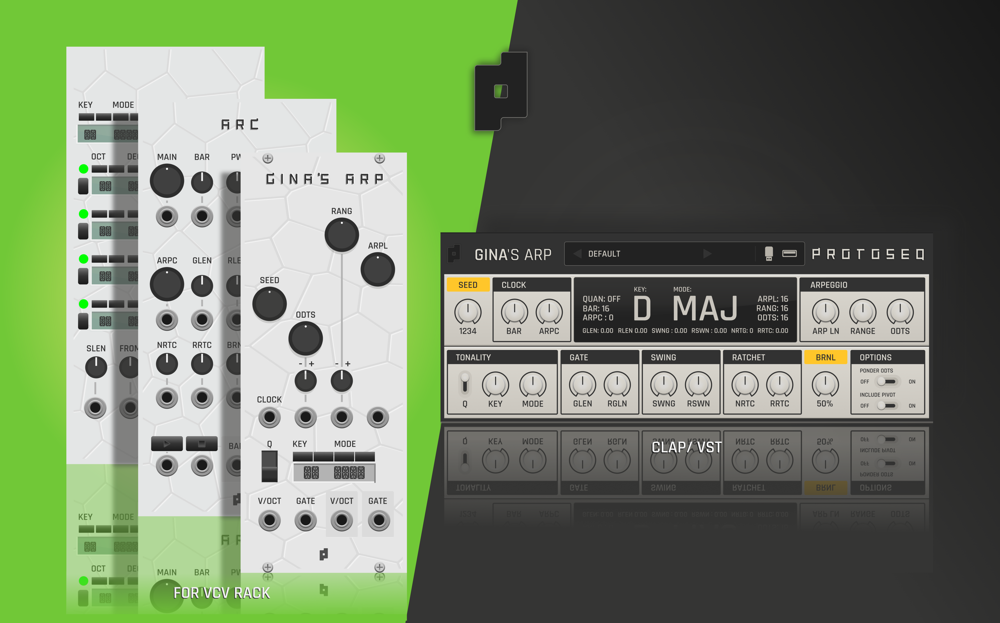

Gina's ARP for VCV Rack, CLAP and VST.

A register-based generative arpeggiator and sequencer built around controlled randomness, tonal weighting, seed behavior, range opening, and controlled note oddities.
Explore new rhythmic shapes. Move from soft melodies to chaotic phrases with small tweaks, while keeping control of the sequence. Thanks to the ARC module in Rack and the clock features in CLAP/VST, Gina can generate endless sequences.
Gina generates solid melodies and lets you modulate their length, openness, and stability. Its algorithm brings musical foundations that have not been explored this way in any software or hardware arpeggiators.